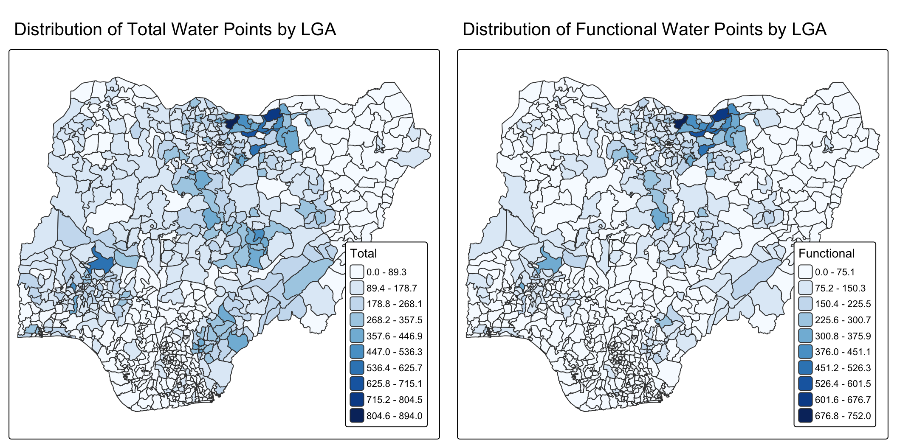
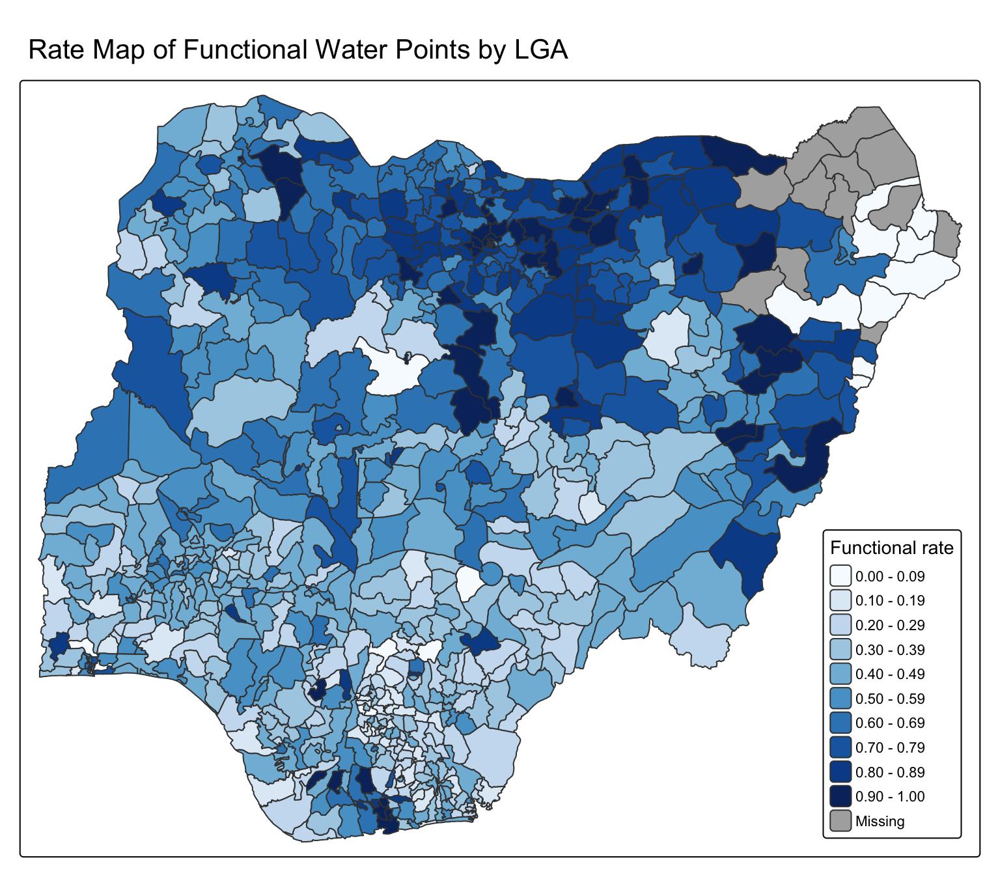
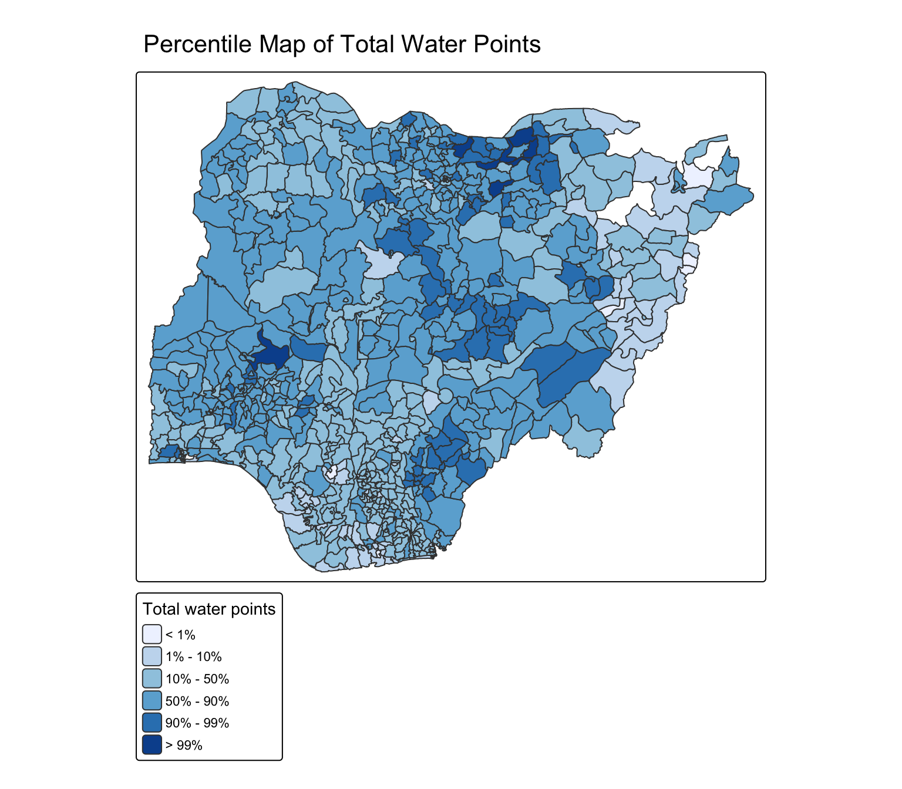
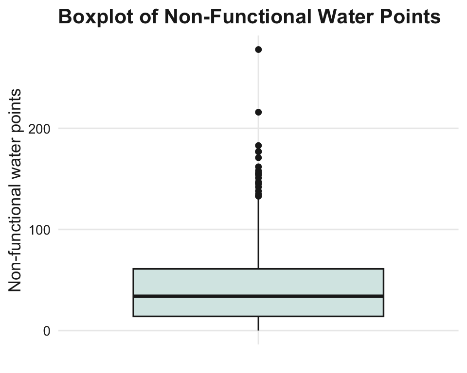
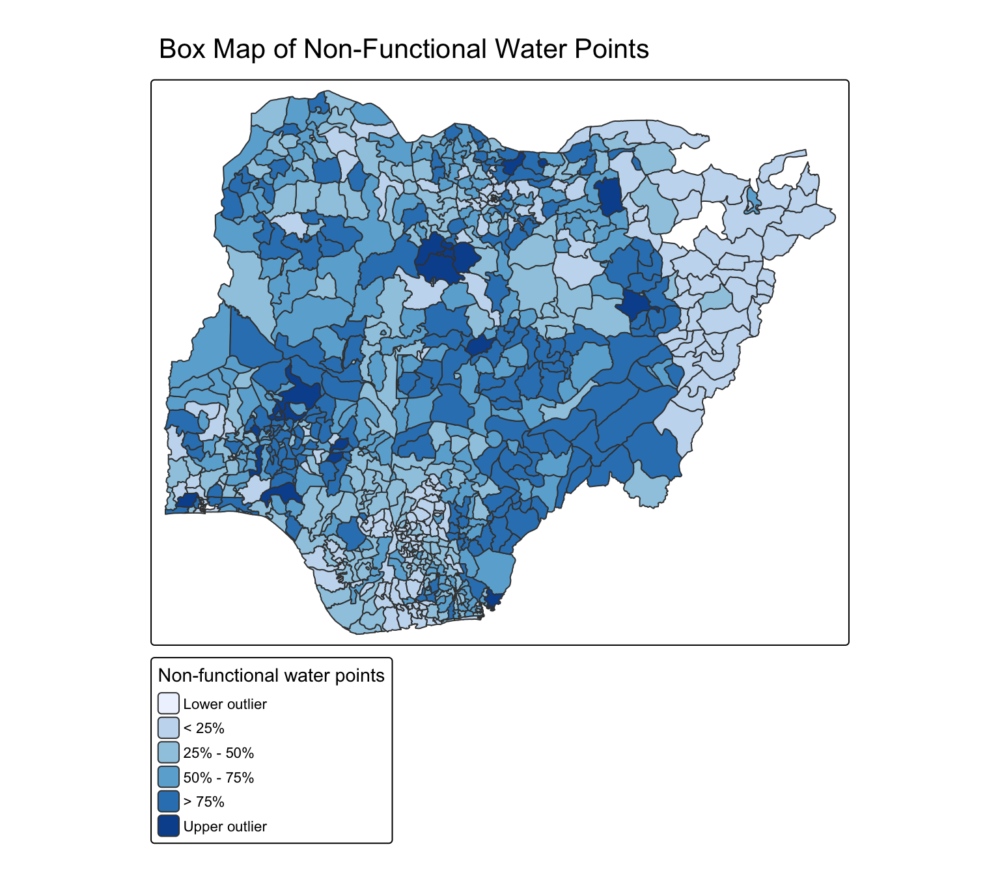

if (!requireNamespace("pacman", quietly = TRUE)) {
install.packages("pacman", repos = "https://cloud.r-project.org")
}
pacman::p_load(tmap, tidyverse, sf, DT, knitr, scales)Hands-on Exercise 9c - Analytical Mapping
23.1 Overview
This hands-on exercise follows Chapter 23 of R4VA, Analytical Mapping. The exercise uses a prepared polygon simple feature data frame of Nigeria water points at Local Government Area (LGA) level.
The uploaded file is named NGA_wp (1).rds, so this document reads that exact filename from the local data/rds folder.
23.1.1 Objectives
The objective is to gain hands-on experience using R methods to create analytical maps.
23.1.2 Learning Outcome
By the end of this exercise, the following tasks are practised:
- importing geospatial data in RDS format;
- creating choropleth maps with
tmap; - mapping counts and rates;
- creating percentile maps; and
- creating box maps to highlight extreme values.
23.2 Getting Started
23.2.1 Installing and Loading Packages
The setup chunk installs pacman if needed and loads the required packages.
tribble(
~Package, ~Purpose,
"sf", "Read and handle simple feature polygon data.",
"tmap", "Create choropleth, percentile, and box maps.",
"tidyverse", "Wrangle the water point attributes and derive rates.",
"DT", "Display interactive tables.",
"knitr", "Create compact summary tables.",
"scales", "Format rates and proportions."
) |>
datatable(
rownames = FALSE,
options = list(pageLength = 10, dom = "tip")
)23.2.2 Importing Data
The data file is an RDS object. It is already a polygon sf data frame.
NGA_wp <- read_rds(find_data_file("NGA_wp (1).rds"))
NGA_wpSimple feature collection with 774 features and 8 fields
Geometry type: MULTIPOLYGON
Dimension: XY
Bounding box: xmin: 26662.71 ymin: 30523.38 xmax: 1344157 ymax: 1096029
Projected CRS: Minna / Nigeria Mid Belt
First 10 features:
ADM2_EN ADM2_PCODE ADM1_EN ADM1_PCODE
1 Aba North NG001001 Abia NG001
2 Aba South NG001002 Abia NG001
3 Abadam NG008001 Borno NG008
4 Abaji NG015001 Federal Capital Territory NG015
5 Abak NG003001 Akwa Ibom NG003
6 Abakaliki NG011001 Ebonyi NG011
7 Abeokuta North NG028001 Ogun NG028
8 Abeokuta South NG028002 Ogun NG028
9 Abi NG009001 Cross River NG009
10 Aboh-Mbaise NG017001 Imo NG017
geometry total_wp wp_functional wp_nonfunctional
1 MULTIPOLYGON (((548795.5 11... 17 7 9
2 MULTIPOLYGON (((547286.1 11... 71 29 35
3 MULTIPOLYGON (((1248985 104... 0 0 0
4 MULTIPOLYGON (((510864.9 57... 57 23 34
5 MULTIPOLYGON (((594269 1209... 48 23 25
6 MULTIPOLYGON (((660767 2522... 233 82 42
7 MULTIPOLYGON (((78621.56 37... 34 16 15
8 MULTIPOLYGON (((106627.7 35... 119 72 33
9 MULTIPOLYGON (((632244.2 21... 152 79 62
10 MULTIPOLYGON (((540081.3 15... 66 18 26
wp_unknown
1 1
2 7
3 0
4 0
5 0
6 109
7 3
8 14
9 11
10 22tibble(
measure = c(
"Number of LGAs",
"Number of columns",
"Geometry type",
"Coordinate reference system",
"Minimum total water points",
"Maximum total water points"
),
value = c(
nrow(NGA_wp),
ncol(NGA_wp),
paste(unique(st_geometry_type(NGA_wp)), collapse = ", "),
st_crs(NGA_wp)$input,
min(NGA_wp$total_wp, na.rm = TRUE),
max(NGA_wp$total_wp, na.rm = TRUE)
)
) |>
kable()| measure | value |
|---|---|
| Number of LGAs | 774 |
| Number of columns | 9 |
| Geometry type | MULTIPOLYGON |
| Coordinate reference system | EPSG:26392 |
| Minimum total water points | 0 |
| Maximum total water points | 894 |
NGA_wp |>
st_drop_geometry() |>
slice_head(n = 10) |>
datatable(
rownames = FALSE,
options = list(pageLength = 10, scrollX = TRUE, dom = "tip")
)23.3 Basic Choropleth Mapping
23.3.1 Visualising Distribution of Functional and Total Water Points
The first analytical maps compare two count variables:
total_wp: total number of water points in each LGA;wp_functional: number of functional water points in each LGA.

p1 <- tm_shape(NGA_wp) +
tm_polygons(
fill = "wp_functional",
fill.scale = tm_scale_intervals(
style = "equal",
n = 10,
values = "brewer.blues"
)
) +
tm_borders(lwd = 0.1, fill_alpha = 1) +
tm_title("Distribution of Functional Water Points by LGA")
p2 <- tm_shape(NGA_wp) +
tm_polygons(
fill = "total_wp",
fill.scale = tm_scale_intervals(
style = "equal",
n = 10,
values = "brewer.blues"
)
) +
tm_borders(lwd = 0.1, fill_alpha = 1) +
tm_title("Distribution of Total Water Points by LGA")
tmap_arrange(p2, p1, nrow = 1)
Note
Count maps are useful, but they can over-emphasise LGAs with many water points. The rate maps in the next section adjust for the total number of water points in each LGA.
23.4 Choropleth Map for Rates
23.4.1 Deriving Proportion of Functional and Non-Functional Water Points
Rates are derived by dividing by total_wp. LGAs with zero total water points are assigned NA for rate fields to avoid division by zero.
NGA_wp <- NGA_wp |>
mutate(
pct_functional = if_else(
total_wp > 0,
wp_functional / total_wp,
NA_real_
),
pct_nonfunctional = if_else(
total_wp > 0,
wp_nonfunctional / total_wp,
NA_real_
)
)
NGA_wp |>
st_drop_geometry() |>
summarise(
lgas = n(),
lgas_without_water_points = sum(total_wp == 0),
mean_pct_functional = mean(pct_functional, na.rm = TRUE),
mean_pct_nonfunctional = mean(pct_nonfunctional, na.rm = TRUE)
) |>
mutate(
mean_pct_functional = percent(mean_pct_functional, accuracy = 0.1),
mean_pct_nonfunctional = percent(mean_pct_nonfunctional, accuracy = 0.1)
) |>
kable()| lgas | lgas_without_water_points | mean_pct_functional | mean_pct_nonfunctional |
|---|---|---|---|
| 774 | 13 | 50.7% | 36.5% |
23.4.2 Plotting Map of Rate

tm_shape(NGA_wp) +
tm_polygons(
fill = "pct_functional",
fill.scale = tm_scale_intervals(
style = "equal",
n = 10,
values = "brewer.blues"
)
) +
tm_borders(lwd = 0.1, fill_alpha = 1) +
tm_title("Rate Map of Functional Water Points by LGA")23.5 Extreme Value Maps
Extreme value maps are choropleth maps designed to highlight unusually low or unusually high values. They are useful for spatial exploratory data analysis.
23.5.1 Percentile Map
The percentile map uses six classes: 0-1%, 1-10%, 10-50%, 50-90%, 90-99%, and 99-100%.
23.5.1.1 Data Preparation
NGA_wp_clean <- NGA_wp |>
drop_na(pct_functional, pct_nonfunctional)
tibble(
measure = c(
"LGAs before dropping NA rates",
"LGAs after dropping NA rates"
),
value = c(nrow(NGA_wp), nrow(NGA_wp_clean))
) |>
kable()| measure | value |
|---|---|
| LGAs before dropping NA rates | 774 |
| LGAs after dropping NA rates | 761 |
23.5.1.2 Creating Customised Classification
percent <- c(0, .01, .1, .5, .9, .99, 1)
total_wp_values <- NGA_wp_clean["total_wp"] |>
st_set_geometry(NULL)
quantile(total_wp_values[, 1], percent) 0% 1% 10% 50% 90% 99% 100%
1.0 2.0 23.0 97.0 265.0 491.2 894.0 23.5.1.3 Creating the get_var() Function
get_var <- function(vname, df) {
v <- df[vname] |>
st_set_geometry(NULL)
v <- unname(v[, 1])
return(v)
}23.5.1.4 A Percentile Mapping Function
percentmap <- function(vnam, df, legtitle = NA, mtitle = "Percentile Map") {
percent <- c(0, .01, .1, .5, .9, .99, 1)
var <- get_var(vnam, df)
bperc <- quantile(var, percent, na.rm = TRUE)
tm_shape(df) +
tm_polygons(
fill = vnam,
fill.scale = tm_scale_intervals(
breaks = bperc,
values = "brewer.blues",
labels = c(
"< 1%",
"1% - 10%",
"10% - 50%",
"50% - 90%",
"90% - 99%",
"> 99%"
)
),
fill.legend = tm_legend(title = legtitle)
) +
tm_borders(lwd = 0.1, fill_alpha = 1) +
tm_title(mtitle)
}23.5.1.5 Test Drive the Percentile Mapping Function

percentmap(
"total_wp",
NGA_wp_clean,
legtitle = "Total water points",
mtitle = "Percentile Map of Total Water Points"
)23.5.2 Box Map
A box map uses the logic of a boxplot to identify lower and upper spatial outliers.
ggplot(
data = NGA_wp_clean |> st_drop_geometry(),
aes(x = "", y = wp_nonfunctional)
) +
geom_boxplot(fill = my_light_teal, colour = my_dark) +
labs(
title = "Boxplot of Non-Functional Water Points",
x = NULL,
y = "Non-functional water points"
) +
theme_yy
23.5.2.1 Creating the boxbreaks() Function
boxbreaks <- function(v, mult = 1.5) {
qv <- unname(quantile(v, na.rm = TRUE))
iqr <- qv[4] - qv[2]
upfence <- qv[4] + mult * iqr
lofence <- qv[2] - mult * iqr
bb <- vector(mode = "numeric", length = 7)
if (lofence < qv[1]) {
bb[1] <- lofence
bb[2] <- floor(qv[1])
} else {
bb[2] <- lofence
bb[1] <- qv[1]
}
if (upfence > qv[5]) {
bb[7] <- upfence
bb[6] <- ceiling(qv[5])
} else {
bb[6] <- upfence
bb[7] <- qv[5]
}
bb[3:5] <- qv[2:4]
return(bb)
}23.5.2.2 Test Drive the Break Function
var <- get_var("wp_nonfunctional", NGA_wp_clean)
boxbreaks(var)[1] -56.5 0.0 14.0 34.0 61.0 131.5 278.023.5.2.3 Box Map Function
boxmap <- function(vnam, df, legtitle = NA, mtitle = "Box Map", mult = 1.5) {
var <- get_var(vnam, df)
bb <- boxbreaks(var, mult)
tm_shape(df) +
tm_polygons(
fill = vnam,
fill.scale = tm_scale_intervals(
breaks = bb,
values = "brewer.blues",
labels = c(
"Lower outlier",
"< 25%",
"25% - 50%",
"50% - 75%",
"> 75%",
"Upper outlier"
)
),
fill.legend = tm_legend(title = legtitle)
) +
tm_borders(lwd = 0.1, fill_alpha = 1) +
tm_title(mtitle)
}
boxmap(
"wp_nonfunctional",
NGA_wp_clean,
legtitle = "Non-functional water points",
mtitle = "Box Map of Non-Functional Water Points"
)Additional Exploration
The table below lists LGAs with the highest non-functional water point rates among LGAs with at least 10 total water points.
NGA_wp |>
st_drop_geometry() |>
filter(total_wp >= 10) |>
arrange(desc(pct_nonfunctional)) |>
select(
ADM1_EN,
ADM2_EN,
total_wp,
wp_functional,
wp_nonfunctional,
pct_nonfunctional
) |>
slice_head(n = 15) |>
datatable(
rownames = FALSE,
options = list(pageLength = 10, scrollX = TRUE, dom = "tip")
) |>
formatPercentage(columns = "pct_nonfunctional", digits = 1)Key Takeaways
Tip
Analytical maps should be selected to match the question. Count maps show magnitude, rate maps control for the denominator, and extreme value maps highlight outliers.
In this exercise:
read_rds()imports the Nigeria water point polygon layer;tm_polygons()creates count and rate choropleth maps;- functional and non-functional rates are derived safely by checking
total_wp > 0; - percentile maps highlight values in the top and bottom tails; and
- box maps use boxplot logic to identify lower and upper spatial outliers.